Autos Americanos
-
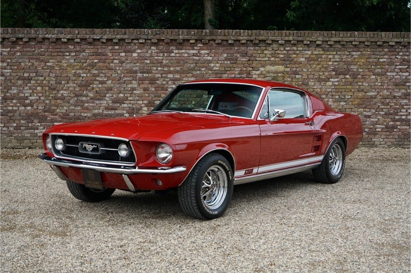
Ford Mustang 1967
En 1967, Carroll Shelby creó Ford Mustang GT350, el primero de una espectacular lista de autos. Tenía un V8 modificado de 7L y 428 pulgadas cúbicas de poder, que estaba inspirado en el 1,2,3 de su equipo en Le Mans.
$15.000 -
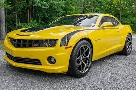
Camaro SS 2010
El Camaro cuenta con un motor 8 cilindros de 6.2 litros el cual ofrece 426 hp (26hp más que la versión automática) y un torque motor de 420lb/pie. El peso de la unidad es de 1,751 kg, con ello la aceleración a los 100 km/hr es en 4.7 segundos.
$40.000 -
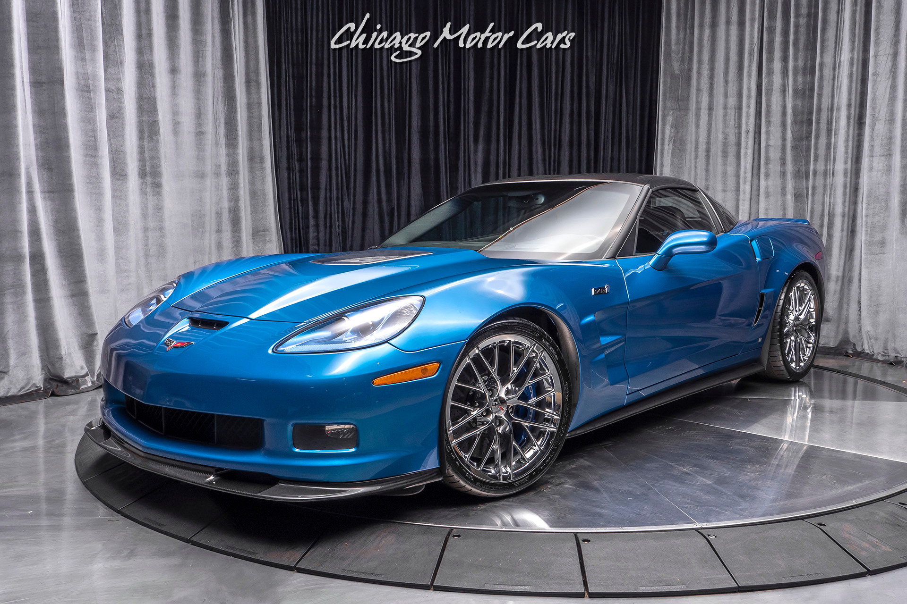
Corvette Zr1 2009
El Chevrolet Corvette ZR1 cuenta con un motor delantro longitudinal ocho cilindros en V sobrealimentado que desarolla un par máximo de 820 Nm desde 3800 rpm y una potencia máxima de 647 CV a 6500 rpm transmitida a las ruedas traseras de 20 pulgadas a través una transmisión manual de 6 velocidades.
$60.000
Autos Japoneses
-

Nissan GTR34
El Nissan Skyline es un modelo de auto japonés que se ha producido en distintas versiones ininterrumpidamente desde 1957. Sería tras la fusión de los fabricantes Prince y Nissan, cuando comenzó a comercializarse con este nombre. Por estos días, el GTR R34 se ha convertido en el carro más deseado.
$30.000 -
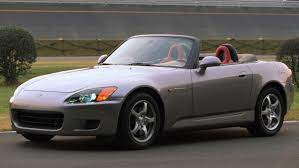
Honda s2000
El Honda S2000 es un automóvil deportivo producido por el fabricante japonés Honda desde abril de 1999 hasta junio de 2009. Es un descapotable de dos plazas con techo de vinilo de plegado eléctrico, motor central delantero longitudinal y tracción trasera. Tiene un diferencial de deslizamiento limitado Torsen acoplado a una transmisión manual de seis velocidades.
$40.000 -
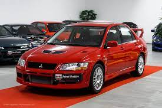
Mitsubishi Lancer Evo VII
El Mitsubishi Lancer Evo VII cuenta con un motor delantro transversal cuatro cilindros en línea sobrealimentado que desarolla un par máximo de 383 Nm desde 3500 rpm y una potencia máxima de 280 CV a 6500 rpm transmitida a las cuatro ruedas de 17 pulgadas a través una transmisión manual de 5 velocidades.
$60.000
Super Autos
-
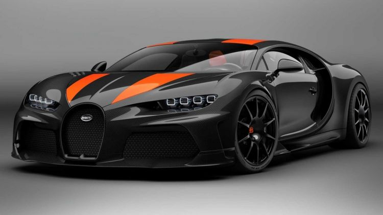
Bugatti Chiron
El Bugatti Chiron es un hiperdeportivo de Bugatti, que reemplazó al Bugatti Veyron en 2016. El Bugatti Chiron se caracteriza por ser el vehículo más rápido del mundo, siendo capaz de sobrepasar los 490 kilómetros por hora. Es un vehículo revolucionario, más avanzado en todos sus aspectos que su antecesor, pero sin emplear tecnologías híbridas o una construcción rompedora. Cuenta con un impresionante motor W16 de 8 litros en posición central, con 1500 CV, que le permite hacer el 0-100 km/h en 2,5 segundos. El precio del Bugatti Chiron es de 2,4 millones de euros y se fábrica en la factoría de Molsheim, Francia, de forma prácticamente artesanal.
Oferta Super Exclusiva -
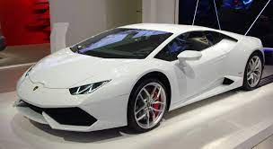
Lamborghini Huracán
Mantiene el mismo motor V10 naturalmente aspirado de 5204 cm³ (5,2 L; 317,6 plg³) heredado del Gallardo, con un diámetro x carrera de 84,5 x 92,8 mm (3,33 x 3,65 plg), distribución de doble (DOHC) árbol de levas por cada bancada de cilindros y 4 válvulas por cilindro (40 en total), distribución de válvulas variable (VVT), lubricación por cárter seco y una relación de compresión de 12,7:1, que desarrolla una potencia máxima de 610 CV (602 HP; 449 kW) y 560 N·m (413 lb·pie) de par máximo,7 compartido también con el Audi R8 4S. Para garantizar el equilibrio y el rendimiento, la disposición es de motor central-trasero como se acostumbra desde hace tiempo en la firma. Tiene tanto inyección directa como inyección multipunto de combustible, combinando los beneficios de ambos sistemas y siendo la primera vez que se utiliza esta combinación en un V10.
Oferta Super Exclusiva -
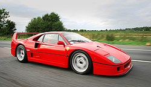
Ferrari F40
El Ferrari F40 es un automóvil superdeportivo berlinetta de dos puertas biplaza, producido por el fabricante de automóviles italiano Ferrari. Su fabricación comenzó en 1987 con motivo del 40.º aniversario de la fundación de la marca. Su precio, su comportamiento y su concepto lo convirtieron en un clásico instantáneo y hoy en día, es recordado junto al 288 GTO como el último gran Ferrari de la vieja escuela. Un ejemplar que perteneció al piloto de Fórmula 1, Nigel Mansell, fue vendido en 1990 por un precio récord de 1 000 000 £, el cual se mantuvo hasta los años 2010.
Oferta Super Exclusiva -
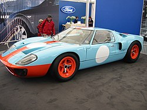
Ford GT40
El Ford GT40 es un automóvil de carreras ganador de las 24 Horas de Le Mans cuatro veces seguidas desde 1966 hasta 1969. Fue construido por Ford Motor Company para competir en las carreras de resistencia, y así hacer frente a Ferrari quien ganó en seis ocasiones consecutivas desde 1960 hasta 1965. El automóvil se llamó GT haciendo referencia a Gran Turismo, y el número 40 representa la altura total del vehículo que es de 40 pulgadas (101,6 cm), como dictaban las normas de participación. Se usó un motor V8 en posición longitudinal de 4,7 a 7,0 litros de cilindrada, en comparación al motor V12 de 3,0 litros a 4,0, usado por su rival: el Ferrari 330 P4.
Oferta Super Exclusiva -
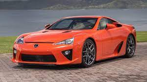
Lexus LFA
El Lexus LFA es un automóvil deportivo coupé biplaza de dos puertas, con motor central-delantero montado longitudinalmente y tracción trasera, producido por el fabricante japonés Lexus, subsidiaria de Toyota Motor Corporation. Fue comercializado entre 2010 y 2012 en una serie limitada a 500 unidades, incluyendo 50 coches con paquete "Nürburgring" cuya finalidad era ofrecer mejores cualidades para su uso en circuito.Es el segundo modelo de la línea F, marca de vehículos de alto rendimiento de Lexus.
Oferta Super Exclusiva -
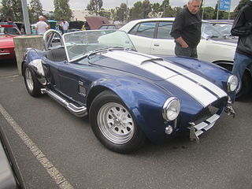
AC Cobra
El AC Cobra es un automóvil deportivo anglo-estadounidense construido en los años de 1962 a 1966 por el fabricante AC Cars. En contra de la creencia popular, no fue este el primer automóvil en utilizar un chasis ligero y una carrocería de aluminio europeos y un potente motor V8 estadounidense, pero posiblemente haya sido el más famoso.
Oferta Super Exclusiva